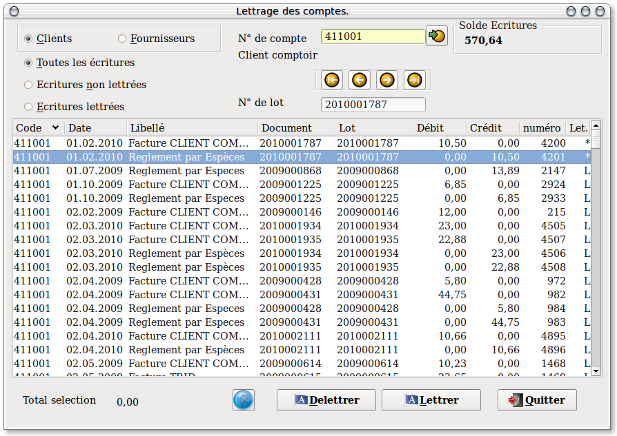

~ Comptabilité Laurux ~

~ Comptabilité Laurux ~ |
|
|
|

A gauche, un panel permet de sélectionner le type de comptes a visualiser. Il suffit de cliquer le bouton correspondant à votre choix. ( Ce sont les clients qui sont proposés par défaut)
Sélectionnez le compte en cliquant sur l'icône  à droite de la zone "Numéro de compte".
à droite de la zone "Numéro de compte".
Dans la partie jaune apparaisent l'ensemble des ecritures. Par défaut, ce sont les écritures non lettrées qui s'affichent.
Pour effectuer le lettrage, sélectionner chaque ligne en cliquant dessus, le solde se met à jour a chaque sélection, saissez un numéro de lot (qui deviendra commun à l'ensemble des lignes sélectionnées), puis cliquez sur le bouton "Lettrer".
Rappel : Trois conditions doivent être réunies pour que le lettrage puisse de faire.
1- Les écritures à lettrer doivent avoir le même numéro de lot.
2- Le solde des écritures portant le même numéro de lot doit être égal à zéro.
3- Le total des écritures ayant le même numéro de lot doit être égal à zéro.
Pour delettrer des écritures, cliquez sur le bouton "Ecritures lettrées", sélectionner les lignes en cliquant dessus, puis cliquez sur le bouton "Delettrer". Il n'y a pas de controle d'équilibre pour le delettrage.
Vous pouvez bien sur vous déplacer parmi les comptes a l'aide des fleches appropriées (Voir le paragraphe concerné dans les généralités).
----------------------------------------------------------------------------------------------------------------------